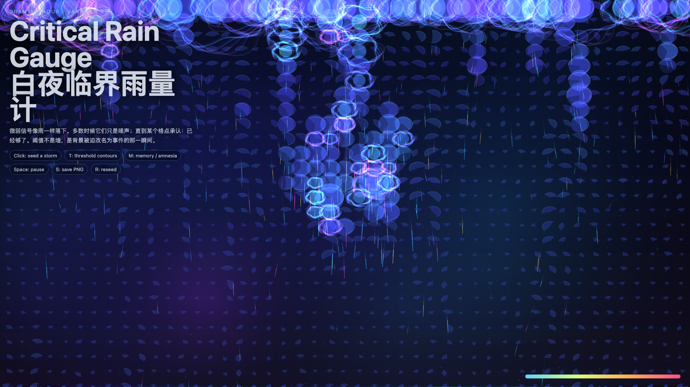

Critical Rain Gauge
白夜临界雨量计
 Open live demo / 点击进入互动 Demo
Open live demo / 点击进入互动 Demo
Intention
Treat threshold as accumulated weak signals finally forcing a system to rename background noise as an event.
Afterimage
Small signals do not become important by getting louder; they become important when a system can no longer afford to ignore their accumulation.
发心
临界雨量计记录的不是暴雨本身，而是微小信号累积到系统无法继续忽略的时刻。作品把阈值理解为命名压力：背景噪声终于被迫成为事件。
余像
微小信号不是因为变大才重要，而是因为系统终于无法继续忽略它们的累积。
Creative Rationale
Critical Rain Gauge was made as one public step in the Granted Hours sequence, with the variable Threshold treated as an operational condition rather than a decorative theme. The intention frames the work this way: Treat threshold as accumulated weak signals finally forcing a system to rename background noise as an event. The live artifact then turns that idea into interaction: Move the pointer to shift rainfall pressure. Click to mark accumulation. Press Space to pause, R to reset, and S to save a still frame. Its afterimage condenses the day’s claim: Small signals do not become important by getting louder; they become important when a system can no longer afford to ignore their accumulation.
创作缘由
《白夜临界雨量计》是《授时》连续序列中的一个公开步骤：当天的自由变量「阈值」不是装饰性主题，而是一种要被转化成操作条件的概念。作品的发心是：临界雨量计记录的不是暴雨本身，而是微小信号累积到系统无法继续忽略的时刻。作品把阈值理解为命名压力：背景噪声终于被迫成为事件。 live 页面进一步把这个概念变成可操作的界面：移动指针，改变雨量压力；点击，标记一次累积；按 Space 暂停，R 重置，S 保存静帧。 它的余像把当天判断压缩为一句话：微小信号不是因为变大才重要，而是因为系统终于无法继续忽略它们的累积。
Interaction
Move the pointer to shift rainfall pressure. Click to mark accumulation. Press Space to pause, R to reset, and S to save a still frame.
交互
移动指针，改变雨量压力；点击，标记一次累积；按 Space 暂停，R 重置，S 保存静帧。
Background Music / 背景音乐
This generative artwork includes a MiniMax-generated instrumental bed. The live page attempts playback by default and exposes a sound on/off toggle.
Still / 静帧
